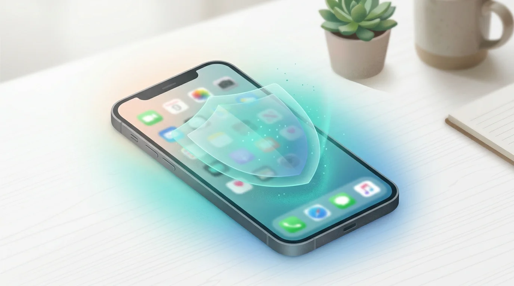
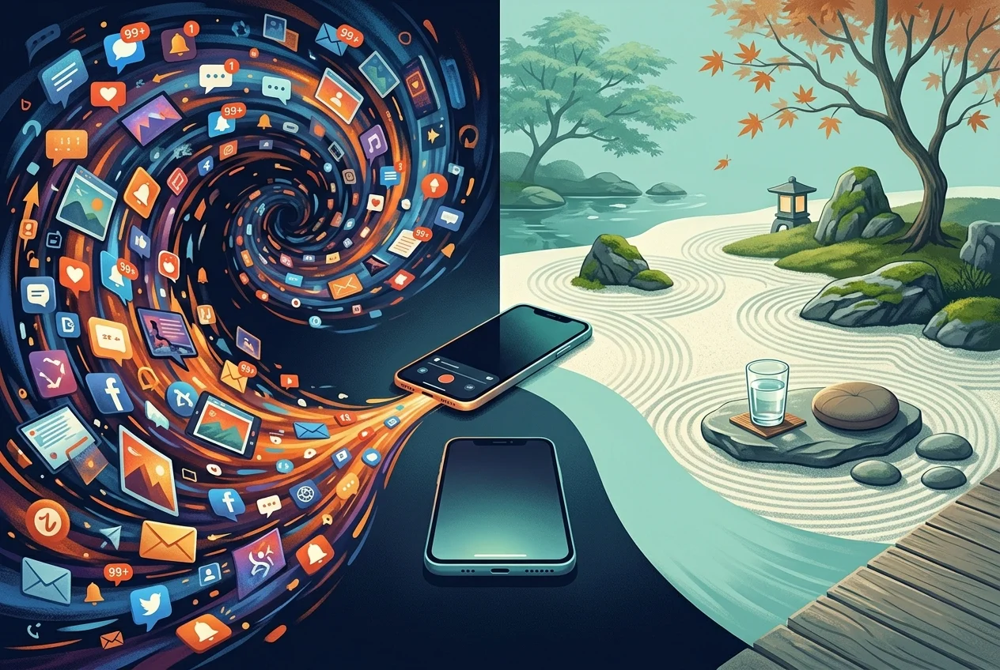

7 Best App Blockers for iPhone in 2026
Ranked and reviewed—from nuclear lockouts to gentle nudges—so you can find the friction that actually fits your life.

You've already opened TikTok three times since you sat down to work. You know this because the last time you checked, you told yourself "just one more video." Your eyes are glassy, your to-do list is untouched, and somewhere in the background a low-grade guilt is accumulating. If this pattern sounds familiar, you already know what doomscrolling is—and why it's so hard to stop. You don't have a discipline problem. You have an architecture problem—and the right iPhone app blocker can fix it.
The best app blockers for iPhone in 2026 are Sip & Scroll, Opal, One Sec, Freedom, ScreenZen, AppBlock, and Apple Screen Time. Each targets a different behavior pattern—from gentle hydration-based friction to hard scheduled lockouts—so the right choice depends on whether you need a nudge or a padlock.
The App Store is stacked with tools designed specifically to put friction between you and the feed. The frustrating part: they are not all built the same way, and picking the wrong one is the fastest route back to square one. This guide cuts through the noise and ranks them by how well they match different types of users.
What Makes a Good iPhone App Blocker?
Before diving in, it's worth understanding what separates an effective app blocker from digital wallpaper. Most people who download a blocker and delete it within a week do so for one of three reasons: the restrictions felt punitive, the setup was too complicated, or—most commonly—they found a loophole and exploited it the moment willpower dipped.
A genuinely effective app blocker on iPhone needs to do three things well. It needs to introduce real friction before you access a distracting app, not just after you've already opened it. It needs to be difficult to disable in a moment of weakness—because the whole point is that your future self will want to bypass it. And it needs to feel proportionate: a solution calibrated to your actual problem, not a maximum-security prison for someone else's.
Apple's own Screen Time API, introduced with iOS 15 and extended significantly since, now gives third-party developers the ability to build robust blocking features natively. That shift changed everything. The blockers available today are meaningfully more capable than anything from even two years ago.
The 7 Best App Blockers for iPhone in 2026
1. Sip & Scroll — Best for Habit Replacement
Most app blockers work on a single axis: block or don't block. Sip & Scroll operates on a different principle entirely. Rather than punishing you for trying to open Instagram, it inserts a micro-ritual before you can access it: take a sip of water, verified by a quick selfie, and you unlock a 30-minute window. When the window closes, you decide whether to take another sip or walk away.
The behavioral logic here is sound. It comes from implementation intention research—the idea that pairing an existing behavior (opening a distracting app) with a new healthy micro-behavior (drinking water) gradually rewires the automaticity of the original urge. You're not white-knuckling it. You're just adding a two-second speed bump that returns agency to your prefrontal cortex before the dopamine hit hijacks the decision.
Best for: People who want to manage their scrolling without eliminating it entirely. Particularly effective for those who've tried hard blockers and found them unsustainable.
Key features: Hydration-gated app access, 30-minute timed sessions, selfie verification, works with any app you choose to manage.
Pricing: Free to start, premium plan available.
Limitation: Designed for habit formation, not complete lockout. If you need zero-access blocking, pair it with a harder tool.
2. Opal — Best for Scheduled Deep Work
Opal has become one of the most polished app blockers in the iOS ecosystem. It allows you to create Focus Sessions—scheduled or on-demand blocks that lock you out of chosen apps and websites for a defined period. The interface is clean, the scheduling system is flexible, and the "Deep Work" mode gives it legitimacy as a productivity tool rather than just a parental control clone.
What makes Opal stand out is the social accountability layer. You can share your focus streaks with friends, which introduces a light but real commitment device. When sessions are active, bypassing them requires waiting out a cool-down timer—enough friction to derail most impulsive grabs.
Best for: Professionals who need to protect scheduled focus blocks and appreciate data on their usage patterns.
Key features: App and website blocking, scheduled sessions, usage analytics, social streaks.
Pricing: Free tier with limited sessions; premium subscription (~$9.99/month or ~$59.99/year).
Limitation: The most useful features sit behind the paywall. The free version is enough to test but not enough to rely on.
3. One Sec — Best for Breaking Impulse Opens
One Sec does exactly one thing, and it does it brilliantly. When you try to open a monitored app—say, X/Twitter or Reddit—One Sec intercepts the launch and asks you to take a slow breath before proceeding. A progress ring fills on screen. After a few seconds, you can continue or close out.
This sounds trivially simple. It is not. The research behind implementation delay—introducing even a three-to-five second pause before an impulsive action—shows dramatic reductions in follow-through. The urge to check social media is not a sustained desire; it's a momentary spike. One Sec exploits the fact that most spikes dissipate on their own if you just refuse to feed them immediately.
Best for: People who don't need hard blocking but want to interrupt the muscle-memory reflex of opening apps without thinking.
Key features: Breathwork-style launch delay, intention journal prompts, usage stats.
Pricing: One-time purchase (~$2.99) plus an optional subscription for advanced features.
Limitation: Not a hard blocker. Determined users can always proceed. The friction is psychological, not technical.
4. Freedom — Best for Cross-Device Blocking
Freedom's defining advantage is scope. Where most iPhone app blockers stop at your phone, Freedom syncs blocks across iPhone, iPad, Mac, and Windows simultaneously. If you're the kind of person who simply migrates from phone to laptop the moment one device gets blocked, this is the tool that closes that escape hatch.
Sessions can be scheduled in advance—Sunday nights, you set the week's focus blocks and forget about it. The "Locked Mode" makes it impossible to edit an active session without restarting your device, which adds genuine technological friction rather than just a nag screen.
Best for: Remote workers and students who use multiple devices and need consistent blocking across all of them.
Key features: Cross-platform sync, recurring schedules, Locked Mode, website and app blocking.
Pricing: ~$3.33/month billed annually (~$39.99/year); limited free trial.
Limitation: Higher cost than single-device alternatives. Locked Mode, while effective, can frustrate users who legitimately need to access a blocked resource mid-session.
5. ScreenZen — Best Free Option
ScreenZen earns its place in this list primarily because it offers a genuinely functional free tier with no time-limited trial. For users who want basic friction without committing to a subscription, ScreenZen is the most accessible starting point.
Its core mechanic is similar to One Sec: a customizable delay screen appears before you can open a flagged app, with an optional intention-setting prompt. You can set daily time limits per app and schedule app-free periods throughout the day. The UI is utilitarian rather than polished, but it gets the job done without requiring a credit card.
Best for: Users who want to test app blocking before investing in a paid solution, or those with genuinely modest needs.
Key features: Delay screens, daily time limits, app-free schedules, intention prompts.
Pricing: Free with most core features; optional paid upgrade.
Limitation: Less polished than premium competitors. Advanced scheduling and deeper analytics require the paid version.
6. AppBlock — Best for Strict Scheduled Lockouts
AppBlock takes a more authoritarian stance than most tools on this list, and for some users that's exactly the point. Its scheduling system is granular—you can define recurring block rules down to the hour for each day of the week, covering specific apps, entire categories, or any app with a browser. During a locked session, there is no bypass option and no countdown timer you can wait out. The app is simply not accessible.
If you've tried gentler tools and found yourself negotiating your way past them every time, AppBlock's hard stance is the level of friction you may actually need. The lack of escape routes is a feature, not a bug.
Best for: High-impulse users who have failed with softer tools and need genuine technological barriers rather than just prompts.
Key features: Hard scheduled lockouts, category blocking, no in-session bypass, recurring weekly rules.
Pricing: Free with basic features; premium plan (~$2.49/month) for full scheduling and category blocking.
Limitation: Rigidity cuts both ways. If your work requires occasional access to a blocked platform, you'll find the lack of flexibility genuinely inconvenient.
7. Apple Screen Time (Built-In) — Best for Families
Apple's native Screen Time, available in Settings on every iPhone, is the starting point most people overlook before downloading a third-party app. For families with children on iOS devices, it remains the most seamless solution—primarily because it integrates directly with Family Sharing and allows a parent to set restrictions that a child cannot override without a passcode.
For individual adults, Screen Time is less compelling. Its "Downtime" and "App Limits" features are easy to bypass with a tap—you can simply extend or ignore any limit you've set. The built-in system was designed with awareness in mind, not hard friction. Serious personal use requires a different passcode holder, usually a trusted friend or partner, to make the limits actually stick.
Best for: Parents managing children's device usage across a Family Sharing group.
Key features: App limits, Downtime scheduling, Communication limits, content restrictions, Family Sharing controls.
Pricing: Free, built into iOS.
Limitation: Too easy for adults to override on their own device. The architecture assumes someone else controls the passcode, which is workable for parental use but awkward for personal accountability.
App Blocker Comparison: All 7 at a Glance
| App | Best For | Key Feature | Price | Blocking Style |
|---|---|---|---|---|
| Sip & Scroll | Habit replacement | Hydration-gated access with selfie verification | Free | Gentle friction |
| Opal | Scheduled deep work | Focus Sessions with social accountability | Free tier / ~$9.99/mo | Scheduled lockout |
| One Sec | Breaking impulse opens | Breathwork-style launch delay | ~$2.99 one-time | Psychological pause |
| Freedom | Cross-device blocking | Syncs blocks across iPhone, iPad, Mac, Windows | ~$3.33/mo (annual) | Hard lockout + Locked Mode |
| ScreenZen | Best free option | Customizable delay screen with intention prompts | Free | Delay + time limits |
| AppBlock | Strict scheduled lockouts | No-bypass granular weekly schedules | Free / ~$2.49/mo | Hard lockout, no bypass |
| Apple Screen Time | Families | Family Sharing integration, built into iOS | Free (built-in) | Soft limits (bypassable) |
How to Choose the Right App Blocker for You

The best app blocker is the one you actually keep installed. That sounds obvious, but it's the most commonly violated principle in digital wellness. People download the most aggressive option available, last three days, and then uninstall it because it was blocking something they legitimately needed.
Start by diagnosing your actual problem. Are you opening apps reflexively without realizing it—the muscle-memory grab the moment you pick up your phone? If so, a delay-based tool like One Sec or Sip & Scroll addresses the root behavior without scorched-earth blocking. Are you capable of starting a focus block but consistently breaking it mid-session when resistance hits? You need harder friction: AppBlock or Opal's locked mode. Do you find yourself migrating the addiction from iPhone to MacBook the moment your phone gets blocked? Freedom's cross-device architecture was built specifically for you.
The second variable is your relationship with restriction. Some people respond to hard limits the way they respond to a diet: the moment the rule exists, they start negotiating exceptions. For those users, a gentler commitment device—one that adds a ritual rather than a lockout—produces more sustainable behavior change. Others need the equivalent of a sealed container; any crack in the wall is an invitation to breach it.
Know which type you are before you choose.
The Willpower Fallacy
There is a persistent belief that needing an app blocker is a sign of weakness—that a sufficiently disciplined person should be able to just put the phone down. This belief is both wrong and counterproductive. The apps competing for your attention in 2026 were built by teams of engineers, behavioral economists, and neuroscientists with one explicit goal: keeping you engaged past the point of intention.
Willpower is a finite cognitive resource. It depletes with use, degrades under stress, and is functionally useless at 11pm when you're tired and bored. The apps on your phone were engineered to exploit exactly that vulnerability window. You are not failing when you open TikTok against your better judgment at midnight. You are losing a rigged game.
The only winning move is to change the game's architecture before the game starts. This is the core insight behind digital minimalism—designing your environment so the default behavior serves you, not the algorithm. Set the friction while your prefrontal cortex is fully online—while you're calm, rested, and intentional. Then let the friction do the work your future tired self cannot.
That is precisely what every tool on this list, in its own way, is designed to do.
Start with a sip, not a lockout.
Sip & Scroll turns every app-opening urge into a hydration habit. No harsh blocking—just the right friction, at the right moment.
Download Sip & Scroll Free